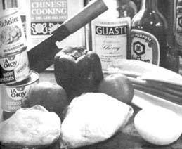
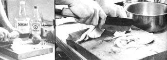
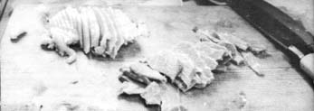
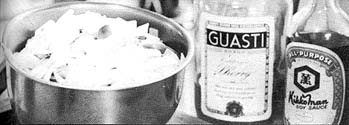
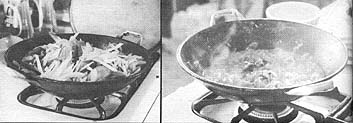
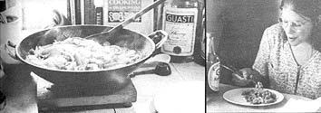
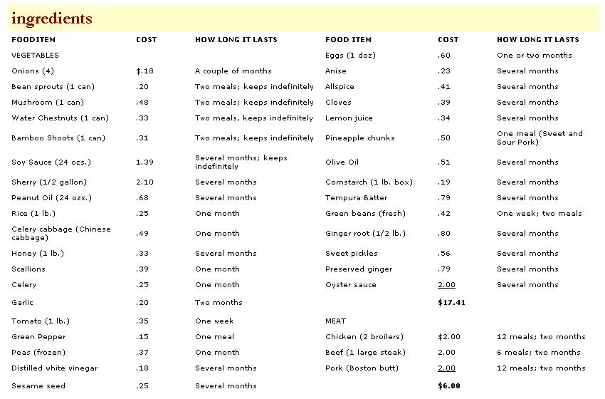
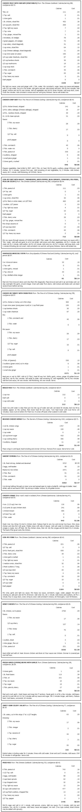

I've been living-and living well - for the past ten months on Chinese food (CF) and the trip has been so successful that I'd like to spread the word to others.
There are four big reasons why I've become a CF freak: [1] It's inexpensive (I live on $10 to $25 per month depending upon how extravagant I become); [2] It's nutritious and excellent for weightwatchers (I trimmed off 20 lbs. in two months and I've never felt better): [3] CF tastes good (a great deal of the emphasis in Chinese cooking is upon flavor, texture and eye appeal; [4] It's a real trip just preparing the meals.
When I say that I live well on $10 per month, I want to make it clear that that figure applies only to the ingredients and utensils used in preparing my CF and does not include utilities, rent or any other non-food household items. Nevertheless, $10 per month amounts to a substantial saving when compared to the monthly $40 or $50 I was spending on food prior to getting into Chinese food.
I should also point out that my eating habits were radically altered when I got into CF. I went from eating two large meals per day to eating one CF meal a day. That's very radical. I found, however, that I could eat all I wanted at this meal and-after the first week or so-I did not become hungry during the rest of the day. I supplement this diet with natural multiple vitamins in hopes of catching anything that I might otherwise miss and I find my current level of food intake quite satisfactory.
If you're unable to live with one big meal a day (it does go contrary to the old claim about "three squares"), there are many delicious Chinese soup recipes and other snacks which are easy to prepare and which will not significantly increase your food bill.
I knew nothing about Chinese cooking before I made my switch and, therefore, believe that anybody can have a good time preparing and eating the same delicious and nourishing meals I now enjoy. It's easy. In my case, I first went to the library, checked out every CF cookbook on the shelf and copied the recipes I thought sounded interesting. Next, I started a collection of soy sauce, rice, water chestnuts, bamboo shoots, bean sprouts, mushrooms, celery cabbage (Chinese cabbage), cornstarch and all the other "unusual" ingredients I did not already have. I then purchased some chicken, pork and beef . . . began experimenting . . . and soon had my CF system pretty well worked out.
At the beginning of each month I now buy two chickens, one large beef steak and one pork Boston butt . . . and I divide the meat into individual portions that I freeze and use as desired.
If you're interested in economizing, as I have been, this pre-packaging of the meat portion of your CF diet is a good way to do it. The idea gives you positive control of the (generally) most expensive ingredient of any dish and-thanks to the delicious and flexible nature of Chinese recipes-leftovers can always be livened up just by adding a few fresh vegetables during reheating. I bone out the chicken breasts and package each half-breast separately. (Boning is not difficult. Simply remove as much meat from the bones as possible while keeping it all in one piece.) I've found that one such package is enough meat-when accompanied by a suitable quantity of vegetables-to last me two days. Such a package will also provide a hearty single meal for two people.
There's several ways to package drumsticks and thighs. You can bone out both pieces and freeze them together, you can bone out either and add to a half-breast package or you can freeze them separately or together unboned. There are satisfying CF recipes for each combination.
Boning out drumsticks and thighs is a rather tedious task and the result (unlike boned chicken breast) is not always pretty. This is important when it comes to thin-slicing (1/8" or less) chicken for Chinese dishes that rely heavily on eye appeal. Consequently, I've come to prefer leaving these parts whole and using them in recipes that call for unboned thighs and drumsticks.
I save chicken wings until I have four or five pair, then outrageously squander them all on one or another tasty Chinese dish designed just for those otherwise seldom-eaten parts of the bird. (There has been some concern recently about concentrations of harmful drugs in the wings of nororganically-raised chickens. Certainly there should be no problem if you can raise your own or purchase your birds from sources that let their chickens mature naturally in the weed, and gravel instead of a wire cage.)
Chicken backs are harder to deal with. Sometimes I just bone them out as well as possible and add the few pieces of meat to any of the other packages. I suppose one could save the backs for homemade soup stock which is much bette than either bouillon or canned stock (but tedious to make; Then again, there are good CF recipes which call for chicken backs, gizzards, livers and hearts. If all else fails the back, organs and innards of a chicken make excellent catfish bait. There's no need to waste a thing.
I cut the beef and pork into individual portions (about four to five ounces) and bag and freeze each one. There are many commercially-available freezer wrapping products but I prefer two plastic baggies-one inside the other-for the job. The bags are relatively inexpensive, extremely convenient and provide excellent protection against freezer burn. I'm reluctant to recommend the bags without some qualifications, however, since thoughtless use of such products can easily turn into unsound ecological practice. In my case, I remove the still-frozen portions of meat from the bags, turn the baggies inside out, wash, dry and reuse them over and over again. The bags-so used-should not contribute needlessly to our throw-away pollution problems.
It's essential that all fat be trimmed from the chicken, beef and pork (only lean meat is used in CF cooking) and it's usually easiest to pare this waste away when cutting the meat into individual portions for the freezer. Heavy layers of fat provide the major exception to this rule . . . such fat is best extracted when the meat is thin-sliced for cooking. Incidentally, meats are most easily thin-sliced while still partially frozen.
Once packaged the beef, pork or chicken should be quickly frozen at a temperature of 0° F or lower. The beef will keep well from 9 to 12 months at such a temperature and chicken and pork will keep six months to a year. If you have a freezer and can purchase meat in quantity, you'll find this knowledge quite valuable. (By the way, freezer-burn is unpleasant to look at and does adversely affect the quality of meat . . . but it does not make that meat unsafe to eat.)
The two chickens, one large steak and one pork butt I've described have frequently lasted me more than 60 days and, therefore, have cost me only about $3.00 per month. Your meat expenses may run higher or lower, depending on your individual taste and the prices you pay in your local markets.
Although I've talked only about meat so far, vegetables actually provide the bulk of most Chinese dishes. Fresh vegetables, of course, are best and they're naturally more expensive out of season. Even then, $5.00 or $6.00 will supply me for a month or more and I always keep plenty of vegetables on hand.
I usually purchase celery, Chinese cabbage, onions, scallions, mushrooms, bean sprouts (you can grow your own), ginger root (yes, it can be purchased fresh), bamboo shoots (canned), water chestnuts (canned), green beans, spinach, peas, broccoli, tomatoes, cauliflower and asparagus.
Just as with meat purchases, I try to buy most of my vegetables once a month because I've found that I tend to buy too much when I shop in spurts. Invariably, if I go to a store for just a few items, I end up with several things I didn't really need . . . and that adds senselessly to my monthly food bills. I try to keep my shopping trips as few and as far apart as possible and, when I do go to market, I stick strictly (as well as I can) to a list of items that I know need replenishing.
This shopping technique works reasonably well for me. Some vegetables-such as tomatoes and green peppers-deteriorate rapidly, of course, and should always be purchased just prior to use. Most of the produce I include in my CF menu, however, lends itself quite easily to a once-a-month marketing schedule. The canned vegetables I buy (shoots, sprouts and water chestnuts) quite obviously will keep almost indefinitely. Even celery and Chinese cabbage-both of which are difficult to purchase in small quantities-seem to keep pretty well for almost a month which is more than sufficient since I use both vegetables frequently.
The only other ingredients I find necessary are soy sauce (Kikkoman is good), dry sherry for cooking (I use the 80 cent-a-quart kind though-for things such as Drunken Chicken-a better quality sherry is recommended), garlic and oyster sauce. Some folks like even more exotic sauces and ingredients in their Chinese food and the best way to determine your own likes and dislikes is by systematically trying the more unusual recipes that appeal to you.
Finding a full range of CF seasonings and vegetable always easy unless you live in a city large enough to have a Chinese shopping district. On the other hand-surprisingly enough-you may find that certain smaller towns offer a better selection of CF ingredients than a medium-sized city. I live in a thriving metropolis of 250,000, for instance, and can't locate much of what I want for my Chinese dishes . . . so I do most of my shopping in a university town of 40,000 where the supermarkets cater to foreign students and faculty.
Although it is possible to prepare acceptable CF in ordinary North American pots and pans, sooner or later you're sure to both want and need a wok if you expect to do the job right. Matter of fact, since the wok is the all-purpose Chinese cooking utensil, you'll probably want more than one (every Chinese kitchen has at least two.)
The wok was originally designed to fit into the top of a cylindrical wood-burning cook stove and the traditional design has a completely round and spherical bottom. In order to use real wok on a western stove, then, an adapter ring is needed . and most traditional woks sold in this country come equipped. Some manufacturers, however, do away with accompanying ring and modify their woks to fit our stoves slightly flattening the utensils' bottoms. My woks have be so flattened and I honestly don't know whether or not the squared-off bottoms counteract any unique cooking features the traditional design.
Department stores in larger cities seem to be the place to get woks unless, of course, you have access to a Chinese shopping district. You can pay as much as $30 each for the traditionally designed vessel, although I forked over only $2.00 for mine. Then again, I'm not very fancy.
Most woks come with a lacquer coating on them and usually, instructions for removal of the film. I stripped the lacquer from mine with a good boil in baking soda and water and-when the pans were clean-heated them on the stove and rubbed them with peanut oil. That was just the start of the seasoning, as far as I'm concerned and every meal now cooks in the utensils mellows them just a bit further.
The surest way to destroy this seasoning process is by using soap or detergent to clean your wok . . . so don't. When the pans are new, they're shiny and nice . . . but that doesn't last long, so don't worry about it. I'm sure the Chinese have a special brush for cleaning their woks but I just run hot tap water into mine and scrub them with a plastic Tuffy dishwashing pad. When the pans are clean, I dry them quickly on a stove burner to protect them from rust and my woks are now both well seasoned and very black.
Since I've mentioned stoves I would like to add that, in my opinion, gas stoves are infinitely better to cook on than their electric counterparts . . . especially when you're preparing Chinese food. Heat control is so much better on the gas stove and the danger of overcooking by leaving a pan on an "off" electric ring is eliminated. But you use what you have, I guess.
I've read in several CF cookbooks that western taste buds react negatively to the flavor of some Chinese dishes and that most of the recipes commonly repeated in North American Chinese cookbooks have been selected for their compatibility with western tastes. Be that as it may, the strongest flavors I've yet encountered is that of soy and oyster sauce and I find them quite to my liking.
Actually, the Chinese are masters when it comes to accenting flavors of all kinds. There's no way to adequately describe the delicate and unique taste of Honey Chicken or the mixture of contrasting flavors in Sweet and Sour Pork . . . but, as you know if you've savored them, both dishes are delightful and impossible to forget once tasted.
Interestingly enough (considering that they handle it so well), the Chinese think of flavor as only one of three equally-important elements in their cooking. The other two aspects which they value just as highly are texture and eye appeal and-when proper attention is paid to these two qualities-the final dish can, indeed, be sheer delight.
Texture is most important in combination recipes such as Chicken Sub Gum where soft, smooth, hard and crunchy ingredients are all blended together so well that it's always a surprise and a pleasure to discover crisp wafers of water chestnut hidden among other, creamier vegetables. The variety of textures in the dish is impossible to describe . . . but certainly a distinct and delectable addition to the luscious taste of the recipe.
Close attention to both the color of ingredients and the manner in which they're sliced adds a great deal to the eye appeal of CF. Tomatoes, green peppers, celery, peas, water chestnuts, mushrooms, bamboo shoots and other vegetables are carefully chosen and blended in a good recipe with a constant awareness of the pleasing arrangement of compatible colors in the final dish.
Much of the eye appeal of Chinese food is also the result of the unusual cutting and slicing of the ingredients that go into every recipe. Chinese chefs spend up to three years in apprenticeship learning nothing but how to cut things properly!
The general idea in chopping and slicing both meat and vegetables is to cut each ingredient so that it will appear compatible with every other in the finished dish. For example, chunks do not go well with long skinny bean sprouts. When vegetables are diced, meat should be diced also . . . but, of course, experimentation is a big part of the fun in any cooking and-unless you plan to become a famous Chinese chef-there's no need to limit yourself to the strictest of these rules.
Nor will you need the most expensive equipment. A couple of cleavers (light and heavy) and a chopping block (Chinese chefs use a 6" or 8"-thick section of tree trunk) will do the job just fine. I have only one cleaver and my cutting board is a 2" X 12" X 1 S" piece of scrap pine I got from a lumber yard for 25 cents. I certainly don't imagine that I know anything about how to "really" chop the ingredients I use but I have fun making full-length cuts, diagonal slices, dices and other cuts appropriate to the dish I'm preparing.
As I mentioned earlier, meats are most easily thin-sliced while still partially frozen. Remove them from the freezer only ten or fifteen minutes before slicing, then allow the slices to thaw completely while the vegetables and sauces are being prepared. It's a good idea to dry the thawed pieces of meat with a paper towel to keep them from splattering when dropped into hot oil. If too much water is present, the meat may even stew instead of fry . . . so blot that meat dry.
Washed vegetables tend to lose vitamins in the refrigerator and should be stored unwashed . . . then rinsed and scrubbed just prior to cooking.
There are several ways to cook Chinese food but I primarily use just three:
(1) STIR-FRYING, OR QUICK COOKING OVER HIGH TEMPERATURE IN A WOK. This method of preparing food both preserves fuel and produces appetizing and nutritious meals. To stir-fry, the wok is first heated very hot, then oil is poured into the pan and heated very hot before-finally-the meat and vegetables are added and cooked for a quick five to ten minutes per dish. Although the actual cooking with this method is quite rapid, proper advance preparation of a stir-fried dish may take an hour. All ingredients must be ready and mixed beforehand and-once the cooking starts-there is no stopping and the food must not be overcooked. Books differ on whether the meat or vegetables should be fried first for any particular Chinese dish. I'm not an expert, so I just follow each recipe as it directs.
(2) STEWING, OR SLOW COOKING IN A SAUCE. Stewing is much less hectic than stir-frying and can be used to cook whole chickens, fish or shrimp and cut-up poultry, seafood, beef or pork. The process is simply a matter of preparing the sauce and cooking for the prescribed time.
(3) DEEP FRYING, WHICH IS SIMILAR TO WESTERN DEEP FRYING AND WHICH, ALSO, CAN BE DONE IN THE WOK. A mixture of flour and cornstarch called tempura is used for a batter in Chinese deep frying and tempura can either be purchased or made at home. A wok seems to be an especially good container for deep frying since it requires less oil and provides a more even heat than any other pot or pan.
Another CF cooking method that is frequently used but which I haven't tried (and therefore can't properly appraise) is steaming. Apparently it's a very good way to cook fish . . . and vegetables which have been steamed retain almost all their nutrients and often appear so fresh that some people find it difficult to believe they've been cooked at all.
While we're on the subject of cooking I should mention a few words about preparing rice. As you may have guessed, there's more than one way to boil the grain. In fact, after reading seven different CF cookbooks, I now know exactly seven different ways to handle the task. Some say to wash the rice first, others say not . . . and each guide seems to have a different formula for how much water to add to each cup of the grain and how long to then cook the mixture. I can't tell any great difference in the final product and advise you to just pick (and stick with) the one recipe that seems easiest to you.
Consult any of the good Chinese cookbooks I've listed with this article for more specific information on the techniques of CF cooking.
Although this is not primarily a "diet" piece, I've included an estimated calorie count with the recipes that accompany this article. The information is only approximate since the calculations are based on the portions that I use and your servings may be somewhat larger or smaller. I think, though, that this rough guide will quickly point out to weight watchers the value of CF.
Dieticians and other food experts tell us that a normal adult male should consume approximately 2900 calories-an a female about 2100 calories-per day of average activity. Many North Americans' daily calorie intake totals far more than this, leading to a rather noticeable collective weight problem. Since my figures show that the average stir-fry Chinese dish provides only one-fourth to one-third the recommended daily calorie total, it seems obvious that tasty; satisfying and nourishing CF might well be the ideal tool for paring away those years of unnecessary energy which so easily accumulate around the middle.
To sum up then, I certainly feel that I've been eat-ing very well since I switched to Chinese food last September. I've had no illness and I've only felt better since I made the change partly, I'm sure, because I no longer have the desire to constantly stuff myself with greasy, starchy "trash" foods.
I've also saved a lot of money since I began eating CF and, although I'm not always so frugal, my daily food bills now sometimes total only 25 cents. I know-based on first-hand experience-that the individual who purchases wisely, packager, his food into meal-sized portions and utilizes everything he buys can cut his eating expenses to no more than $10 peg month. Vegetarians could get by for even less.
In addition to the above benefits, I've reaped a certain amount of satisfaction from my steadily-increasing mastery of the art of Chinese cooking. Once you get into preparing CF s" think that you, too., will remember with pleasure the day when you're finally able to slice both meat and vegetables evenly into 1/8"-thick pieces . . . or when you discover exactly the diagonal angle at which produce must be cut to appear most appetizing.,
And finally, I don't think I could be as enthusiastic about Chinese cooking if it didn't taste so good. Some dishes are more appealing than others, of course, but I'm usually pleasantly surprised by each new recipe I try. In fact, since I have a CF cookbook with 1,000 recipes, it's been difficult for me to work my way back to the dishes I've already tried and liked. Even though most Chinese recipes utilize the same basic ingredients, there's such a great variety in the finished dishes that I have no fear of ever growing tired of CF.
Sure, I still have an appetite for good old roast beef, beef stew and steak . . . but the Chinese have outstanding recipes for these traditional North American meals, too. The 2,000-year history of CF cooking can't be all wrong, in other words, and since I've switched to eating Chinese food . . . darned if I'm not about convinced that it's the only way to eat!
The above is a fair approximation of my initial shopping list for CF ingredients. Of course, total costs for such a quantity of any food will vary, depending on the individual and where he lives . . .but this chart will give you a good idea of what to expect.
I would like to emphasize that the column stating length of time each ingredient lasts represents both how long an item will keep before it deteriorates and how long one can expect to have a quantity of that ingredient on hand with normal use. In the case of canned vegetables (shoots, mushrooms, chestnuts, etc.), I've indicated the number of meals per can and-as long as they're canned-such items will keep indefinitely. (They'll also keep once opened, if covered with water and stored in the refrigerator. Change the water daily.) Since I've assumed that fresh vegetables will not keep for longer than one month, the designation "one month" means that the item in question will keep that long if not used sooner. For an ingredient that keeps well and isn't used in large enough quantities to require regular restocking, I've used the notation, "several months". The rest should be self-explanatory.
The above-indicated quantity of meat usually lasts me two months and my monthly meat bill is only half the listed figure.
I believe that, with $25, you can stock up on enough food (for one person) to get you started and through your first month of Chinese cooking. You could probably get by with an even smaller investment but you wouldn't have as much fun. If you can spend more, so much the better! Your food bills will go down after the first month, of course, since some of the entries on this list are items which must be purchased only occasionally.
AN ENCYCLOPEDIA OF CHINESE FOOD AND COOKING, Wonona W. and Irving B. Chang, Helen W. and Austin H. Kutscher, Crown Publishers, Inc., New York, 1970, $17.50.
Though expensive, this book will justify its cost to anyone seriously considering CF cooking. ENCYCLOPEDIA is loaded with information about CF cooking methods and ingredients and includes 1,000 recipes grouped according to the meat (chicken, beef, pork, fish, etc.) used. The book also lists the province in China from which individual recipes originate and describes the characteristics of the food in each province.
The ENCYCLOPEDIA is further noteworthy for the special dietary (for example, recipes for diabetics) recipes it contains and the authors do not include the use of Monosodium Glutamate (MSG) in any of the recipes. MSG, a seasoning powder frequently used in CF cooking, has recently been found to have harmful side effects on some people who eat it.
If you want to put all your CF cookbook money into one book, this is the one to purchase. If you can't afford it, at least check ENCYCLOPEDIA out of the library and copy the recipes you want. If you're like me, though, you'll just have to purchase this one.
THE FINE ART OF CHINESE COOKING, Dr. Lee Su Jan, Gramercy Publishing Company, New York, $4.00.
Next to the ENCYCLOPEDIA, this is my favorite cookbook and I'm indebted to it for my Honey Chicken recipe which has always been favorably received. Though FINE ART normally retails for $4.00, I got mine from The American Book Club for one dollar and, at that price, it's a real bargain. FINE ART includes a good section on vegetable cookery.
THE CHINESE COOKBOOK, Wallace Yee Hong, Crown Publishers, Inc., New York, 1962, $3.00.
A good book with a recipe format similar to that of the ENCYCLOPEDIA but I wouldn't buy it if I had both of the above.
CHINESE GASTRONOMY, Hsiang Ju Lin, Tsuifeng Lin, Hastings House, $10.00.
This guide deals with fancy cuisine and it's nice to have around for special occasions. I've extracted several recipes from CHINESE GASTRONOMY which I use when I want to feel as if I'm preparing more than the average, daily fare.
OTHER CHINESE COOKBOOKS:
THE COMPLETE BOOK OF ORIENTAL COOKING, Myra Waldo, David McKay Company, $4.95.
THE PLEASURES OF CHINESE COOKING, Grace Zia Chu, Pocket Book, 1969, $.75.
CHINESE COOK BOOK, Myra Waldo, MacMillan, $5.95.
THE CHINESE-KOSHER COOKBOOK, Ruth and Bob Grossman, Pocket Book, 1970, $.75.
THE WOK, Gary Lee, Nitty Gritty Books, 1970, $4.00.
THE SECRETS OF CHINESE COOKING, Tsuifeng and Hsiangju Lin, Prentice-Hall, Inc., Englewood-Cliffs, N.J., 1960, $3.95.
All of the above are decent cookbooks but they more or less repeat themselves, and certainly repeat what is contained in the Encyclopedia. The Wok is perhaps the most unique selection but I find it lacking in good information. The recipes in The Wok are rather scattered, and Gary Lee does not always provide reasons for his recommendations . . . which is a criteria I strictly adhere to when judging the value of a book.
|
 |
 |
 |
|
 |
 |
 |
|
 |
 |
|